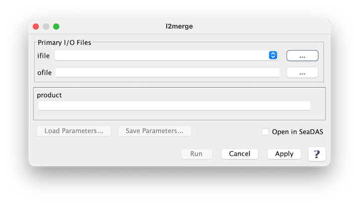

| l2merge | |
Merge Level 2 file.
Location
Details
Command Line Usage
SeaDAS-Toolbox -> SeaDAS Processors -> l2merge
l2merge is used to merge L2 files The output files are NetCDF4 files and have the same format as the original L2 files.
|  |
| UI Element Name | Type | Description | Required/Optional | Default Value |
| ifile | Text Field | Input text file specifying L2 files to be merged | Required | |
| ofile | Text Field | Output netcdf file which will contain merged L2 file data | Required | |
| product | Text Field | product(s) to merge; comma separated | Optional |
| UI Element Name | Type | Description |
| Browser Button | Button | Selects ifile/ofile |
| Load Parameters ... | Button | Reads in previously saved parameters and populates the fields in GUI. |
| Store Parameters ... | Button | Saves the current arguments in GUI in a file. |
| Run | Button | Executes the l2merge command with arguments provided in the UI. |
| Cancel | Button | Closes current processor GUI. |
| Apply | Button | Makes current arguments effective. |
| Open in SeaDAS | Checkbox | If selected, the ofile will be added to the open products list right after its generation. |
| ? | Button | Displays the help content of the current command. |
l2merge 1.0 usage: l2merge [-h] [--version] [-v] [--product PRODUCT] ifile ofile Merge Level 2 files positional arguments: ifile Input text file specifying L2 files to be merged ofile Output netcdf file which will contain merged L2 file data options: -h, --help show this help message and exit --version print program version -v, --verbose print status messages --product PRODUCT product(s) to map; comma separated